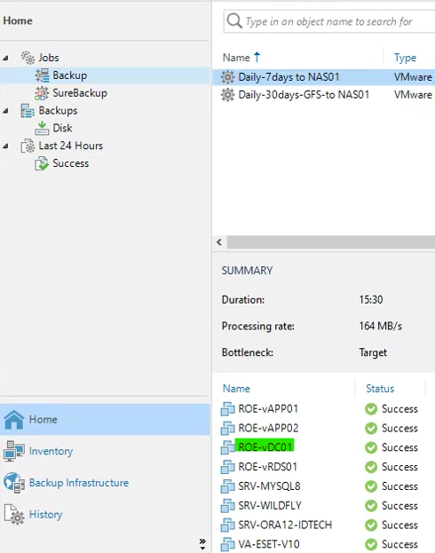

Tutorial – Active Directory Health Check
This check verifies that at least one Domain Controller is properly backed up using the organization's backup solution.
Active Directory backups are essential to recover from corruption, ransomware, accidental deletion, or major infrastructure incidents.
Open the organization's backup solution (Veeam, Acronis, Nakivo, Altaro, etc.) and verify that at least one Domain Controller is included in backups.
Confirm that:
